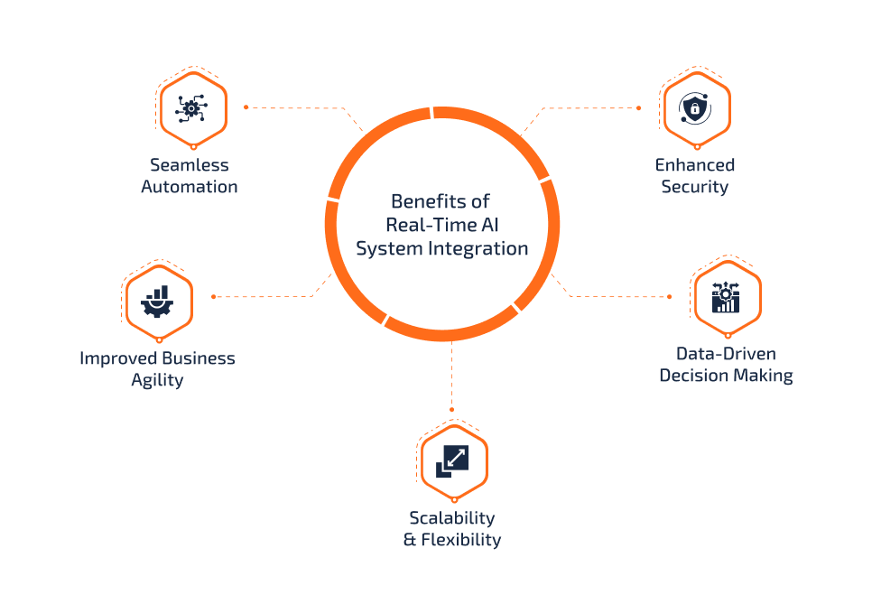
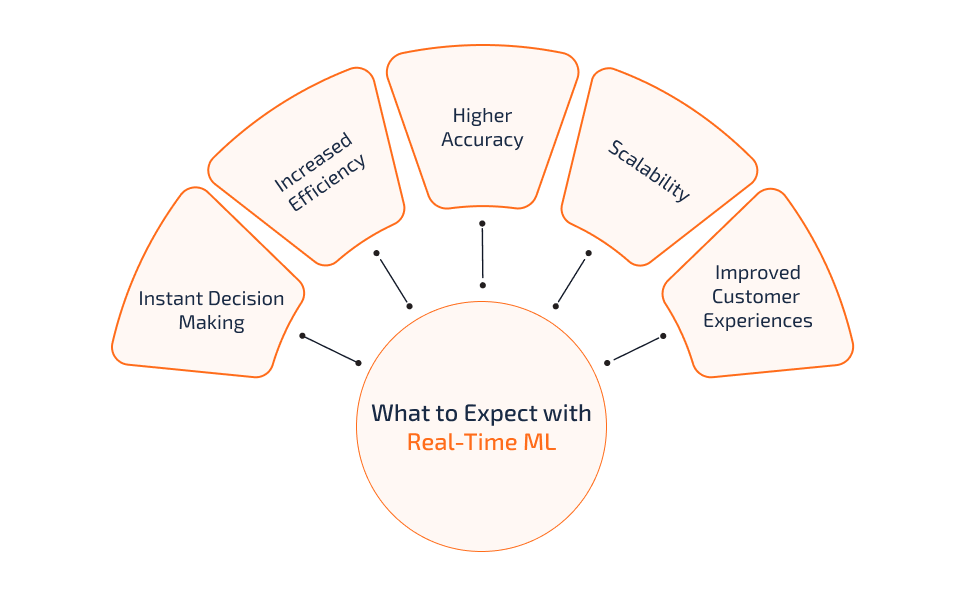
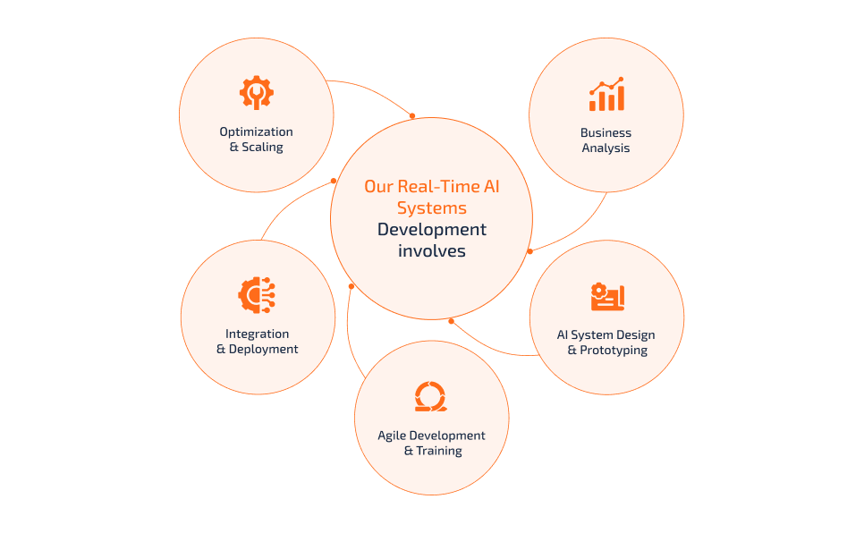

AI is the future of businesses, as we can witness its integration into everyday tasks in one way or another. Businesses are leveraging AI solutions for innovation, efficiency, task automation, better decision-making, and enhanced customer interactions. Taking it a step further, companies are now opting for real-time Artificial Intelligence development services, as they provide instantaneous responses within seconds. This is particularly useful in industries like healthcare, finance, customer service, and cybersecurity, where immediate decision-making is crucial.
We provide Real-Time AI Development Services to help businesses in the rapidly evolving digital landscape maintain a competitive edge. By opting for our service, you can immediately process data, make real-time decisions, and conduct predictive analysis. Our real-time AI development services are designed to integrate seamlessly with your existing systems, helping you respond to dynamic market shifts and drive business operations without any delays.
Whether you want to significantly improve efficiency, enhance customer experience, or stay ahead of the competition, you can choose our Real-Time Artificial Intelligence Development Services to shape the future of your business operations.
Real-Time AI Development Services for Optimizing Business Operations
With the growth of IoT and smart devices, businesses are rapidly looking for AI solutions to process larger data sets in real-time and make instant decisions. Our expert AI developers use real-time data processing, advanced AI models, and machine learning algorithms to craft AI solutions tailored to your business needs and goals.
We have well-trained AI experts who collaborate with you to understand your business needs and ensure seamless integration of AI solutions into your existing processes and systems. They develop intelligent systems that analyze data in real-time and unlock new growth opportunities. By opting for our real-time AI development services, we are not only enhancing the operational efficiency of your business but also helping boost customer engagement.
We are committed to empowering your business with AI-driven intelligence and helping you thrive in the digital era.
Real-Time AI Development Company - Empowering Business with Intelligent Solutions
Businesses are relying on AI solutions to process data and make real-time decisions. We are a leading Real-Time AI Development Company offering services from designing, developing, and deploying custom AI solutions to empower businesses of any type and size.
Our expert AI developers, data scientists, and system architects carefully analyze your business frameworks and develop top-tier AI models in such a way that they bring instant insights, automation, intelligent decision-making capabilities, and enhanced customer experiences. As a top AI development company, we ensure our AI technologies integrate with your legacy systems, cloud platforms, and enterprise applications. As every business has its own goals, scope, and challenges, we create real-time AI solutions that not only meet the current needs but are scalable and adapt to changing industry requirements.

Make Proactive Decisions with Our Real-Time AI Solutions
We have designed our real-time AI solutions in such a way that you can harness the power of AI and machine learning efficiently. Our AI-driven solutions process data instantly, helping businesses proactively make decisions in response to changing conditions. Traditional AI models process data in batches, while our real-time AI operates continuously, allowing your business to identify opportunities and make informed decisions instantly.
With predictive analytics, automation, and real-time anomaly detection, you are providing your business with responsiveness, unparalleled agility, and enhanced decision-making capabilities.
No matter if you want to optimize processes, improve customer support, or mitigate risks, our real-time AI solutions provide you with the intelligence you need to succeed in the ever-evolving business space.
How to Unlock Business Potential with Real-Time AI Systems Integration
Integrating real-time AI systems into the existing business infrastructure is essential if you are focusing on automating tasks, making smarter decisions, improving operational efficiency, and boosting customer engagement. With our real-time AI systems integration services, businesses can incorporate AI-powered solutions smoothly. Thus, you can make your business smarter, more efficient, and more competitive.
With our expertise, we ensure the AI integration is smooth, scalable, and efficient, thereby ensuring your business gains maximum value from its data-driven investments.

Before integrating real-time AI, we conduct a thorough assessment of your business's IT infrastructure. This includes databases, software, hardware resources, and cloud environments. With this, we will be able to find the bottlenecks in data processing and finalize the AI models and frameworks that suit your business needs. We also craft a scalable AI integration strategy based on your business objective.
To begin the process of real-time AI agent development, our team will look for areas where AI integration will benefit your business growth. This will help automate repetitive tasks, forecast trends, enhance security, and optimize business strategies.
After finding the integration points, we deploy AI-powered modules such as Machine Learning models, NLP, Computer Vision & Image Recognition into your existing systems without disturbing any ongoing operations.
We integrate AI solutions into your existing CRM, ERP, and cloud infrastructure to ensure scalability and efficiency. This enables faster response time, real-time data synchronization, and enhanced reporting.
When the AI modules are deployed, they will learn and adapt to new data on a regular basis. With our automated model training and fine-tuning, your AI systems will provide accurate results & recommendations, improved user experience, and better automation & operational efficiency.
Real-Time Machine Learning Services - Transforming Data into Action
Intelligent solutions such as automation, data-driven decision-making, and predictive analytics are driven by Machine Learning (ML). Traditional ML relies on batch processing and requires constant updates as it is trained on historical data. However, with our Real-Time Machine Learning Services, AI models learn from data as it is generated. The greatest advantage of real-time machine learning over traditional ML is that businesses can identify new patterns, trends, and abnormalities without human intervention.

The Workflow of Real-Time Machine Learning:
Continuous Data Processing – Real-time machine learning fetches and processes data continuously. It is achieved via streaming data pipelines, event-driven architecture, edge computing, and cloud processing.
Adaptive Machine Learning Models – We craft self-learning AI models that update with new data and thus require no manual training. These AI models provide customized experiences and help detect potential failures.
Real-Time Machine Learning Applications – We have developed the AI models in such as way they can detect anomalies and fraudulence. They support predictive maintenance, personalized recommendations, dynamic pricing optimization, and real-time sentiment analysis.

What to Expect with Real-Time AI Application Development Services
Real-time AI application development is transforming the way businesses process data and provide responses. It is a process that involves building software applications that process and analyze data on the go, delivering responses, insights, or actions immediately. With our real-time AI application development services, we help you build or upgrade your software application by embedding intelligence that can make decisions in milliseconds based on live data.
As an AI consulting services provider, we build real-time AI apps using advanced technologies like machine learning, deep learning, and real-time data analytics to adapt to dynamic changes. During development, we focus on live data processing, system integration, scalability, adaptability, and proactive decision-making. Thus, our AI-driven applications ensure your business can make real-time decisions that foster better customer support, mitigate risks, and increase ROI.
As AI technologies continue to advance, real-time AI applications will become more intelligent, autonomous, and efficient.
Partner with us if you need a real-time AI chatbot, fraud detection system, or dynamic recommendation tool to transform real-time data into success.
Why Choose Our Optimized Real-Time Artificial Intelligence Services
Processing data with the help of AI in real time has numerous benefits, as it drives automation, reduces manual intervention, and enhances operational efficiency. With our comprehensive real-time artificial intelligence services, you will receive end-to-end support that helps your business utilize real-time AI functions to achieve long-term success. With our real-time AI services, you will gain access to the following:
- With our AI strategy and consultation, it is easy to identify the high-impact areas of your business where you can integrate AI.
- We let you build your own AI model solutions tailored to your business requirements.
- You will achieve immediate results upon integrating real-time AI into your existing system.
- We ensure optimized AI performance with continuous monitoring and support.
- If you want to gain a competitive edge, automate workflows, make better decisions, or enhance customer engagement, our real-time AI services are all you need to explore.
What's Involved in Real-Time AI Systems Development
Developing and deploying a highly intelligent real-time AI system requires a deep understanding of AI technologies, data engineering, cloud computing, and business intelligence. Our team of AI experts possesses all the industry knowledge to help you transform your business goals. Whether you want to gain instant insights, automate processes, or scale up your business, you can partner with us as your trusted real-time AI systems development company.

Enhancing Business Efficiency with Real-Time AI Software Development
Modern business operations are powered by AI-driven software solutions as they learn, analyze, and respond to data in real time. As a trusted real-time AI software development company, we focus on building intelligent software solutions powered by advanced AI algorithms.
The key features we offer with our real-time AI software development include real-time data processing, AI-driven automation, and custom-built AI models to address industry-specific challenges. In addition, we ensure the software is designed to be scalable, adaptable, and highly secure.
1. AI chatbots and virtual assistants to automate customer support and engagement.
2. AI-powered recommendation engines that provide suggestions based on real-time user behavior.
3. Dynamic pricing models that make adjustments based on demand, trends, and competition.
4. Real-time analytics and reporting tools that provide business insights instantly.
5. AI-based fraud detection and security systems that enhance cybersecurity and fraud prevention.
Industries Benefiting from Real-Time AI Solutions
Real-time AI solutions are preferably used across various industries. We are offering our services to a diverse range of business sectors where real-time decisions are making an impact. With our industry-specific expertise, we ensure the delivery of solutions that address the unique challenges and opportunities of your business. The industries benefiting from real-time AI solutions include Healthcare, Finance, Retail, Transportation, and Manufacturing.

Why Choose Us to Be your Real-Time AI Development Company?
It is quintessential to tie up with the right partner when it comes to a real-time AI development company if you are focusing on accuracy, efficiency, and scalability. For the following reasons, you can choose us to be your real-time Artificial intelligence Development company:
1. Our team of experienced AI engineers, data scientists, and system architects with expertise in AI and ML can develop real-time AI solutions customizable to your business needs.
2. We offer end-to-end real-time AI development and integration, starting from conceptualization to deployment and maintenance.
The real-time AI models that we develop for your business are scalable and adaptable. Hence, they will address current challenges and adapt to future trends.
We leverage industry-standard AI tools and technologies; hence, we develop high-performance AI solutions.
We take care of the post-deployment process of your AI solutions with continuous monitoring and provide optimization support at all times.
Empower your Business with Our Real-Time AI Development Services
With the integration of real-time AI, numerous benefits arise, from automating tasks to making instant data-driven decisions and enhancing customer engagement. With our real-time AI development services, you are empowering your business to stay ahead of the competition in the industry with intelligent automation, predictive analytics, and real-time data processing.
With our proven expertise in AI, ML, and data-driven innovation, we help you optimize your business operations, provide personalized experiences, and enhance security. Our real-time AI solutions are designed to provide accuracy, efficiency, and agility. Transform your business journey by partnering with us to build AI-driven solutions that drive innovation and efficiency.
Frequently Asked Questions
Real-Time AI solutions are the advanced AI systems that process data, find patterns, and provides insights instantly without any delay. It is unlike the traditional AI solutions that works based on historical data. The benefits of real-time AI solutions includes instant decision making, improved efficiency, enhanced customer experiences, predictive analysis, fraud detection and security.
AI-driven analytics uses ML and real-time data processing to process a larger set of data and provides insights instantly. With this approach, businesses can make faster and more accurate decisions based on the data. The better decision making is done in real-time with real-time monitoring, automation, personalization, and predictive insights.
There are several challenges associated with implementing real-time AI solutions. It includes high data processing demands, latency issues, complex integration, continuous model training, protecting sensitive data, etc.
The factors boosting the real-time AI integration efficiency in businesses includes speed, accuracy, and cost-effectiveness. i.e., Business operations are enhanced with task automation, faster response time, improved customer support, and supply chain optimization.
Real-time AI solutions significantly reduce operational costs by eliminating manual intervention, minimizing inefficiencies, and optimizing business resources. Automation and real-time data insights allow businesses to allocate resources more effectively, ultimately leading to cost savings.